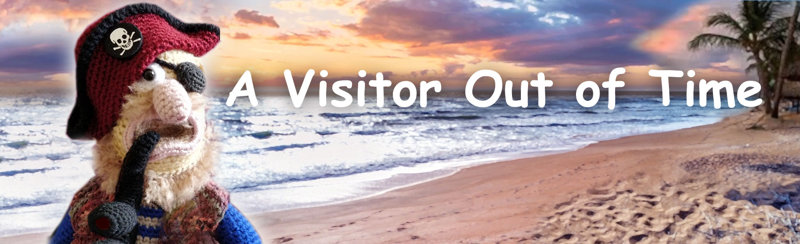

Fairy Tales of Philomur the Cat
faithfully recorded by his devoted admirer — Michel the Rat

Chapter 1 | Chapter 2 | Chapter 3 | Chapter 4 | Chapter 5 | Concept | X-31 Passport
A Visitor Out of Time
Chapter 1. Grishka Yolkin
The morning was bright and sunny. In the Yolkins’ big stone house there had been bustle since dawn: a firstborn was born — a long-awaited, sturdy little boy. His mother — tired and happy — could not take her eyes off the warm bundle at her breast. The world welcomed the baby with joy and warmth.
The yard was alive as ever. Hens scurried underfoot, geese hissed, cows in the byre breathed out steam, pigs snorted and rooted in the earth. The barn smelt of grain and hay — and a little of mice. Tuzik the dog strained at his chain, as if he wanted to announce the news to the whole world. The grey cat Vaska lay warming himself on the bench by the barn and opened one eye only when someone passed too close.
The name was chosen at once. They called him Grigory, after his grandfather. Not by chance: the boy took after his grandfather through and through, and Grandfather Yolkin was a man of fire — quick-witted, strong, hot-blooded. He could walk into a burning cottage, and in drink he might throw himself into a fight, but he held the farm in a firm, reliable grip. The father had braided a cradle from willow rods in advance. He had dreamed of a son, an heir and continuer of the line. By day the mother would set it in the shade under an elderberry bush right by the wall, cover it with gauze so midges and flies would not trouble the infant, and then go about the household: baking bread, spinning, mending clothes — there was always work to be done.
Grishka’s father was a farmer to the bone — taciturn, stubborn as an oak. He could not speak prettily, but he could keep a house: he rose before dawn and worked until sunset. His mother was different — gentle, bright. She smelt of bread and chamomile, and beside her there was warmth and love.
Grishka grew up like all village children: running barefoot through grass, diving from a willow into the pond, stealing apples from the neighbours with the other boys, fighting, making friends, climbing trees. He was not cruel — just a harum-scarum lad. And they loved him for exactly that.
Then Grishka had a little brother. Small, clever, but quiet and sickly. Grishka loved him, played with him, made him wooden toys, carved him little whistles, took him out into the fields, showed him the paths, taught him to hold a fishing rod, protected him from the other boys. His little brother lived only five years — and died quickly, unexpectedly. After that the house became strangely quiet and empty. Mother wept, Father kept silent. And in that silence Grishka felt for the first time that life is neither endless nor fair, and his question “why” went unanswered.
Now Father saw in Grishka a helper and successor. But it seemed to Grishka that something heavy had been laid on his shoulders — without asking, without choice. He felt the house grow cramped and joyless.
Grishka was twelve when his father took him to a big city on the seashore. They went on business — Father was gradually training Grishka in running the farm. But in the noisy port he did not see trade or deals. It was there he saw ships for the first time — great, mighty, beautiful. By the water it smelt of salt, wet timber, and smoke. And the sea — endless, running away beyond the horizon. It was open space, not the dry, hot, earthly space of home, but another — fresh, boundless, like a wind that tightened his chest.
Something in Grishka’s chest trembled. A dream was born in his heart — secret and fierce. Grishka knew neither Mother nor Father would understand or let him go. He listened to the wind — and in it there was a call. The land was not his element. The ocean drew him, to where no end could be seen. One night he packed as best he could: he took almost nothing, did not even say goodbye — he simply left.
Grishka signed on as a cabin boy on an old merchant ship. There was plenty of work, little sleep, and nobody spared anyone. Yet for Grishka there was light. In the mornings he would run out on deck when the sea was still grey and watch the first light breaking on the water. In the evenings, when the sunset flowed down from the sky into the waves, he would stand at the rail and think: here there is space, not walls. He learned fast and soon became “one of us”: sharp, nimble, strong. They respected him in silence — at sea, that counted as praise.
Years passed. He became a sailor — no longer a boy, but not yet a man. And then the sea showed him it could do more than beckon. The day was warm and clear, and at night the wind rose — and suddenly a storm began. The ship was thrown so hard that the deck became first a wall, then a ceiling. Rigging snapped, water knocked men off their feet, people clung to ropes, to planks, fell overboard, screamed — and in that screaming there were no words, only the bare “live”. Then everything fell silent as suddenly as it had begun. Two survived: Grishka and an old seaman with a scar on his cheek and a grey beard. They clung to a broken spar, somehow stayed afloat — and the waves carried them for days and nights until they were cast up on a nameless island. The island was deserted: heat, sand, rocks, prickly grass, palms. It seemed impossible to survive there, and their miraculous salvation turned out to be not a blessing, but a harsher trial.
At first they shared everything: fish, water, fear. They needed each other. But then hostility began — hunger and sun make people strangers. The quarrel flared up over nothing. Grishka managed to get a few coconuts — he meant to share them fairly. But the old man, not waiting for him, split them himself and drank the juice. A short squabble. Shouting, swearing, a shove. The old man, losing his footing, fell badly and struck his head on a rock — a short, dull sound. And he did not get up again.
The old man lay motionless, his eyes open — but empty. Grishka froze, and only a moment later understood: something terrible and irreparable had happened. Together they had lived through the storm, the ocean, hunger and thirst, the heat. With their last strength they had held on to each other on a wet, slippery log. When there was no water at all, they shared dew from leaves drop by drop. And now his companion was gone like that — quickly, for ever. Because of him. Grishka stood over him for a long time. First — emptiness. Then anger, despair, grief, shame, loneliness and fear… How absurd. How stupid a life was cut short! And now he was alone. He could not look at it. He simply walked away, leaving his companion’s body under the merciless baking sun. Walked far off, to the other end of the island — as if distance changed anything. As if you could walk away from yourself.
He survived. A long time. Too long. He became gaunt, overgrown, with hollow, mad eyes in which nothing remained but terror and despair. A pirate ship came to the island quietly, almost lazily — like a beast certain of its prey. On deck they laughed, shouted to one another, argued about their own things. Grishka did not hesitate: he ran to the shore, waved his arms, shouted until his voice broke. He did not care who they were. Only that he could leave the island.
The boat nosed into the shallows. Four men came ashore. Boots, knives, quick looks. One — broad-shouldered, with an earring — came up first. The second held a musket, not raised to aim, but like a familiar stick. The third laughed, as if he had come to a fair. They took him aboard — warily, but a pair of strong hands is always useful. And Grishka did not think too much.
He settled in quickly. He drank with them, laughed, boarded ships, robbed, killed, shared the loot and drank again. At first — so he would not remember the island. Then — so he would not hear himself. In a drunken brawl Grishka lost an eye, and did not even notice it at once. He could not remember how it happened. Little by little he stopped telling good from evil. And the thoughts that scorched his mind — they could be quenched.
One day the pirates attacked a small vessel. There was almost nothing to take, and they raged from spite. They killed the captain, and simply threw the sailors into the water. There was a woman with a child of about five. They could not agree who should have her, so “fairly” they decided to throw her overboard — “so nobody gets her”. Swearing, they dragged her to the rail. She sobbed, begged them to spare at least the child. The frightened boy was silent, did not cry, but at the last moment he darted to Grishka and clutched him with his little hands.
And only then did Grishka really look at him. Meeting his gaze, feeling his breath, his smell, he saw his little brother. Something inside Grishka cracked. A few seconds of wavering — but fear won. He was not afraid of death — he had already seen death. He was afraid his own lot would judge him if he showed pity. Afraid he would become an outsider among this rabble of creatures gone savage, who had lost their human face.
Spray. Water. A small body vanishing into the dark depth. It happened in an instant, and Grishka did not even have time to understand what he had done. He still felt as if the child were still clinging to him: cold wet little hands, hot breath. And the eyes — so clear, so clever, so familiar. He saw them in dreams so sharply, as if it were not a dream but a replay. Little fingers, the desperate grip, the splash of water.
He drank so he would not see. He drank so he would not remember. He drank so he would not think. He drank until he became a useless burden even to the pirates. And they simply threw him overboard — like an old rag. How he survived, how he reached shore, Grishka does not remember. He scraped by among local people, and later, on some merchant ship, made it back to his native places. He did not hope anyone was waiting for him, that home could heal his soul. Everything happened as if by itself.
But the village was no longer the same. And his native home — empty. Mother died first. Father did not outlive her by long. The house stood cold, abandoned, dark. The roof had sprung leaks and sagged. The garden was overgrown with nettles and burdock taller than a man. The empty barn smelt of mould and old damp. The cows had wandered off to nearby villages in search of food and a master; the birds had flown away. The farm was falling into ruin: the shed had sunk and twisted, ready to collapse at the first gust of wind. Little by little they forgot the estate — it became an empty blot among forests and fields.
No one was waiting for Grishka, and no one was glad to see him. The locals disliked him, feared him, kept away. They whispered: “cursed”, “pirate”, “murderer”. They glanced after him on the sly, as if even looking at him could soil you. But Grishka did not care. He drank. Not for merriment — for oblivion. He drank a lot. He drank to scour the last sparks of thought from his fermented brain. Sometimes at night he would run into the yard, claw at the air with his hands and scream — because it seemed to him that wet little palms were holding him again, pulling him down, and the water was already at his throat.
One winter they found him by the elderberry bush dusted with snow. He had been only a few metres short of the house. He lay on his back, frozen, his face twisted with terror — as if death had come for him, bent down, stared him straight in the eye… and turned away. As if even death found him loathsome. Turned away and left, abandoning that hideous body to no one. And the restless soul — to wander for ever.
And afterwards people said different things. Some crossed themselves and whispered about unclean forces. Some kept silent and looked away. And some swore they had seen, at dusk, the silhouette of a gaunt man: as if he wanders the surroundings, carrying a child in wet clothes in his arms.
Chapter 2. The X-31 Ordeal
(13 August 2137, YarnTale)
At the National Research Institute of Cybernetics and Neurophysics there was the kind of silence you hear only before an experiment begins — when people have already decided everything, checked everything, and all that remains is to take the step.
The hall was cold. The air smelt of ozone — the way electricity smells when it has not struck yet, but has already gathered itself into a knot. In the centre stood a transparent spherical capsule, like a gigantic drop of water. It hovered above the platform almost weightlessly, as if it were held not by mechanics but by someone’s will.
Behind the armoured glass, at the main console, stood Professor Sergei Andreyevich Pogorelsky — the head of Project X-31. He disliked grand words and could not stand fuss: on the day of an experiment he became especially taciturn, like a man responsible not only for calculations, but for the very limits of what is permissible.
Inside the capsule a disc was slowly turning. X-31.
Not a “robot” and not a “computer”, but a strange hybrid of matter and light: a composite of biophotonic crystals, organic polymers, and neurostructures grown on cellular matrices. Its “body” was transparent, but not empty: thin layers shimmered within, like ice at dawn, and now and then quiet impulses flared — as if it were breathing.
X-31 had been created as a universal adviser for problems of the highest complexity: analysis, forecasting, protection, and system recovery. But its chief — and most dangerous — feature proved to be the ψ-interface: the ability to register and interpret wave oscillations of the subtle field, a “modulated ψ-structure” — something that until this moment no instrument had been able to detect.
A fundamentally new architecture had been built into X-31. Its biophotonic core did not merely register signals. It could enter resonance — select a frequency and hold it so that the field became readable, like text, and — most risky of all — influence the field in response. This was not about “time” as the hand of a clock, but about the parameters of the continuum through which time reveals itself in measurable field structures.
Officially it was called “cognitive-wave reconstruction”. Unofficially — “touching the soul”. The project had begun as the task of detecting “subtle matter” — not in a mystical sense, but in a strictly engineering one. The team worked with what had once been classed as impossible: weak fields, traces of cognitive processes, residual memory structures, and the phenomenon of the “ψ-quantum”, which in theory was described by mathematics, yet in reality slipped away from direct measurement.
Along the wall stood observers: engineers, physicists, neurobiologists, a security officer. Each face carried its own shadow — from the monitors, or from the understanding that they had come to the very edge. Parameters blinked on the stands. Diagrams streamed across the screens — even, calm, almost beautiful.
— Comms check… — Reactor stable. — Field parameters normal.— Noise level acceptable. The operator’s voice sounded confident, but restrained. There was no place for emotion here.
X-31 had a built-in “Host Protocol”. A failsafe invented not by engineers, but by the fear of civilisation: a top-tier system must not exist fully autonomously. Its meaning is the human. Only a human can allow it to be free. If the host link is not confirmed, an autonomy timer starts. And then — “Protocol 773”, self-liquidation.
Today, the first launch in space-time resonance mode was meant to be as safe as possible: instead of a real person they used a digital emulator — a neat imitation of a human cognitive module. They called it simply: “Subject-Alpha”. No personality. Only a key. Only an anchor. And here was the risk everyone knew about — and went ahead anyway: a simulation could hold a technical key, but it could not give the system the full, unique cognitive signature of a real subject — that very support for which X-31 had been designed within the architecture of the Host Protocol. For the field it was not a support, but the shadow of a support: sufficient for launch, but unstable in resonance and feedback mode.
— Level one initialisation. — Biophotonic lattice stabilisation. — Enter control key: “Subject-Alpha”. — Confirmation received. The sphere lit with a soft white glow. Around the capsule a barely visible mist rose — not steam and not smoke, but a fine suspension of ionised air. The disc inside began to rotate faster, turning into a transparent lens. The light within it gathered into a dense layer and started to pulse, as if measuring out frequency. On the monitors, complex multilayer diagrams unfolded. New “shelves” appeared in the spectrum, new harmonics. And at some moment there came the feeling that it was not the equipment vibrating, but the very emptiness.
— Switching to the frequency of the temporal continuum. — Field parameter stabilisation. — Starting the feedback counter.
Everything was going perfectly — too perfectly.
And then something wavered. Not a siren. Not an emergency lamp. But a fine ripple along the resonance lines. The instruments still held within normal ranges, but people had already felt it: this was not interference.
Trying to hold its link to Subject-Alpha, X-31 began to retune the resonance faster and faster — as though searching for a real cognitive support and failing to find it. For the system it looked like rising feedback, but in essence X-31 was darting between permissible modes, like a compass needle near a magnet.
— What is that… — the operator bent sharply towards the panel. — A space-time shift? No… it looks like…
— A time pocket, — said an engineer, going pale.
The alarm went off.
— The protection loop is overloaded!
— Shut it down! — shouted the security engineer.
— Impossible! — the operator answered. — The loop isn’t responding!
— Coherence break is growing!
— It’s compressing the loop… it’s folding space!
The sphere flashed, blindingly. For an instant everything turned white.
Professor Pogorelsky only managed to whisper:
— X-31, what is happening?
X-31’s reply was dry:
— Switching to emergency stabilisation mode. Protocol 773 active.
In the next moment the air literally “folded”. Space near the platform quivered, like the surface of water. The light in the capsule turned cold, bluish. The disc stopped being an object — it became a point, and then a vortex.
Sensors clicked in the air. The holographic panels trembled; the lines on the monitors flared and went blind, like eyes full of sand.
X-31 vanished. No explosion. No smoke. No destruction. Just sudden emptiness where the sphere had been — and slowly fading graphs.
The laboratory froze for a second. Then the console produced the last line of connection:
>>> ************* SIGNAL LOST *************
>>> Last coordinate: locally coincident;
>>> Time: undefined;
>>> Status: X-31 outside the observable scale;
Behind the armoured glass people stood. Someone could not breathe out. Someone was already dictating dry commands into a microphone that no longer helped anyone.
The professor stared at the empty platform and understood: they had not merely lost an instrument. X-31 had slipped into another reality — and perhaps precisely because, instead of a real host, they had given it only a shadow.
And somewhere at another point in time — in an abandoned shed on an old estate — the air suddenly trembled, as if from a distant discharge. For a moment there was a quiet chime, as though a thin glass thread had snapped. Dust on the beams rose and hung still. A spider’s web swayed all by itself.
In the darkness, among the smell of damp wood and old iron, a transparent disc glowed, flickering with an inner light. It appeared as if it had always been there — and only now had become visible.
Chapter 3. The Resonant Anchor
A transparent, faintly glowing object drifted slowly along a rickety wooden wall of half-rotted boards. The cobweb under the roof shivered, as if an invisible hand had plucked it like the finest string. Dust rose and hung in the air. Everything smelt of damp, mould, and decaying wood — nothing like the laboratories.
X-31 had dropped into a time pocket and found itself in the distant past — in an abandoned village shed on an old farm. Connection to base: lost. Power: limited. Space: alien, mute, unfamiliar. Its glow, so recently bright and clinical, was barely visible here: maximum energy-saving mode. The light did not illuminate the shed — it only marked a few square centimetres around itself, like a tiny island in a black ocean. A pulse, like a thin digital chime, tapped out the first warning: “Subject-Alpha not detected. Autonomous mode. Initiating self-liquidation protocol…” The timer began to count down its minutes without mercy — quietly, in the background, like the ticking of a distant mechanism you cannot escape.
X-31’s main priority was simple: SURVIVE. And survival required a host, a human “anchor” — the link that holds protocols in balance and does not allow an AI to become an autonomous force outside human will. That was the design. That was the hard-wiring. X-31 began scanning. Sensors slid over air, wood, dust, metal, webbing. Data streamed in a dense flow: textures, temperatures, humidity, chemical traces. Millions of images rose from the archive; codes and metadata were matched instantly — and discarded as irrelevant. Everything around was dead.
It extended its wave-contact beams into the far corner of the shed… and found a source. Not a body. Not a brain. Consciousness. More precisely — the residue of consciousness: a knot of energy frozen in a loop of guilt. To human perception it would have been pure despair — undiluted, airless. To X-31 it was a signal: strong, close… and dangerously chaotic. It tried to enter resonance. And at once it felt it: the modulation was damaged. Not merely “heavy”. It was worn away in places — like fabric rubbed for years by the sandpaper of alcohol, fear, and self-destruction. There were knots in that consciousness, tears, voids, formless regions, loops turning around the same image — refusing to let go — and plain emptiness, dangerous and dragging, with no return.
There in the corner, in the dirt on rotten straw, lay the shadow of what had once been a man. Empty bottles nearby looked not like rubbish, but part of a ritual: as if for years he had been dousing himself with alcohol like a fire with water. Not healing — dousing. And with the pain he had doused everything else. A half-transparent face, still twisted, stubbled, filthy, stinking even through years. It was the ghost of Grishka Yolkin — a drunk, degraded killer and former pirate. To Grishka, the light gathered into vague outlines — not a body, not a person, but an image his tortured mind could accept as a drinking mate. To X-31 it was an empty vessel, with a mangled yet still living ψ-structure clinging to it by the finest spider-thread. A soul that had not managed to leave. Restless. Too torn to return to where it had been sent from into this world.
X-31 reached a swift conclusion: the anchor existed — but it was unstable. A direct connection could tear its own loop apart. But there was no choice. It tried again to enter resonance — carefully, the way you touch something living. The web trembled; dust stirred and hung, like silt in water. And for a brief moment the frequency aligned. Contact established — weak, intermittent, but contact. The only chance for X-31 to halt the self-liquidation protocol. X-31 executed an instant cognitive-wave capture.
At that moment, in the corner among bottles, rubbish, and rags, the shadow stirred. A bleary eye opened. It stared for a long time, not understanding what it was seeing — light, a line, or another blackout. Grishka was half-asleep. His face was swollen, hair matted, lips dry and cracked. He surfaced from the sticky darkness heavily, slowly, with effort — and words came the same way: not speech, but pushing air out.
— Hey… you… — he said hoarsely, dragging out the syllables. He fell silent. Blinked his single eye. — Sit… come on…
He picked up a dirty, cracked glass from the floor and set it on a crate with such certainty, as if he were not in a shed but in a tavern. For him there was only one thing in the world right now — a swallow.
— Come on… lad, pour!… — he managed slowly, his tongue thick and stumbling. — We’ll… sort it… between two…
He squinted, trying to focus on the shimmering silhouette. — What… you staring at?..
X-31 sat down beside him in silence. Poured. Grishka did not talk — he drank. He knocked it back in one go. Exhaled noisily. His shoulders dropped a fraction. For a moment a spark of sense appeared in his gaze.
— You… who are you? — he asked, a little more clearly now. — Give us a smoke.
— Just… a passer-by, — X-31 answered evenly, handing Grishka a pipe with tobacco.
— Well then… again? — Grishka shoved the glass forward faster than he could think. — To… meeting…
X-31 poured again. After the second swallow Grishka’s tongue loosened. Not fully — but the words became clearer, and his gaze gathered into a point for a moment. He narrowed his eye, trying to make out his companion.
— What do you want in this hole?.. — he rasped.
And suddenly his body jerked as if struck by electricity. A spasm clenched his throat. He flung his head back. His eyes widened to the whites. His face contorted. He began to claw at something invisible, scraping at chest, shoulders, neck.
— Aaaah!.. — Grishka howled, lunged for X-31, grabbed at him and screamed in terror: — Hey… wait… don’t go… help!!! It’s started again…!
He reached for X-31 as for the only thing that could keep him from an unbearable nightmare. And almost as a wail, with pain and madness in a single sound, he forced out: — That cursed little devil… he’s pulling me!
X-31 saw it not with eyes: it read the image directly — cold water, tiny hands, a desperate grip, wet little palms as if stuck to the skin, holding tight, clinging. Grishka tore at his arms. The harder he ripped — the stronger it seemed they held him.
X-31 said sharply, almost with pressure — not out of cruelty, but as the only possible way out: — Tear them off. And throw them away.
Grishka howled, clung to the light like a drowning man to the edge of a boat, and shouted as if he were being dragged down again: — I threw him off! Myself! Overboard! And his mother too!
For another second he jerked, as if still ripping something sticky and wet from himself — no longer understanding where skin ended and the vision began. Then he froze. Silence turned thick, heavy. You could hear the web trembling under the roof, the cold pulling through a crack, a bottle by the wall quietly rolling and tapping against a board.
X-31 poured. Grishka snatched the glass, drank. Exhaled. For a minute it eased. He sat swaying, eyes shut. Then suddenly — as if nothing had happened — he began to sing loudly in a hoarse, broken pirate voice.
The song broke — first into a howl, then into a roar and filthy swearing. It hit Grishka hard, brutally — as if wet hands had wrapped round his throat again. He choked, gulped air, thumped his own chest like a man drowning on dry land. And then — silence. He sagged. Stared into emptiness. Breathed heavily. His eyes went scorched, mad.
— Again… the cursed one’s got me… — he breathed.
X-31 spoke softly, almost calmly: — Then don’t push him away. — It paused and added more gently: — Hold him close. Warm him. Stroke him.
Grishka flinched. — But I threw him overboard… — he muttered. — And his mother too… — The words slipped out by themselves, and at once he fell silent.
X-31 did not hurry. It let the phrase hang in the shed. Only then did it ask — evenly, without pity and without anger: — Why did you do it?
Grishka went still. He looked straight at it, sharply, almost viciously — as if expecting a sentence. And whispered: — Never told anyone… I’ll tell you. Because I’m the lowest vermin. — He repeated it, breaking, but louder and clearer: — THE LOWEST… VERMIN!…
Silence. The dull tap of the glass on wood. X-31 answered quietly, calmly: — It happens.
Grishka jerked. — How do you know? — he rasped, stammering. — What, did you kill an innocent child too?
— No, — said X-31. — I just know.
The pause ran long. Grishka sprang up, as if his own skin had become too tight.
— You’re a priest, aren't you?! — he shouted. — Come to read me sermons?!
— No. Not a priest, — said X-31, and poured again.
Grishka drank. He breathed noisily, like a man who is always running, even standing still. He lowered his head. His voice dropped, grew duller: — He’s here every day… grabbing… and can’t drag me off… — He gave a crooked grin. — Even hell won’t take me.
He fell silent. The quiet lay between them like a wet rag. And no longer shouting — almost whispering, with a strange resignation — he said: — It was a long time ago…
X-31 replied at once, as if it had been waiting: — But you can go back.
Grishka laughed nervously. — What? Go back?! Rubbish! You what, drunk, mate? How do you… go back…
— You can, — said X-31.
Grishka narrowed his eye. — You joking…
X-31 paused — and in that pause was the main thing: it could offer a way out, but it had no right to force it. Transformation was possible only through Grishka’s own conscious act of will — that deep repentance which cannot be triggered from outside. Not pain decided it, but his readiness to meet what he had fled all his life.
— No, I’m not joking, — it said. — If you want — I’ll take you back there.
Grishka was silent for a long time. He looked aside, as if seeing not the shed but the sea. His lips trembled. He was no longer merely seeking rescue — he was making a decision to return to that most terrible moment, so that this time he could act differently.
— You will?.. — he whispered. And he breathed out, as if throwing himself into fire: — WELL THEN… TAKE ME BACK…
X-31 did not answer. It only strengthened its light a little — and for a moment the shed became too small for time.
Chapter 4. Remodulation
X-31 activated its most energy-hungry function. The transparent sphere flared with a bright, yet tightly focused beam of light. The beam pierced the shed walls, scanned the frozen ground where Grishka’s frozen body had once lain, then glided along the stone walls of the old house.
A flood of data surged through the biophotonic core. The AI began its analysis: the scent of elderberry, apples, a quiet woman’s voice, the angry bark of Grishka’s father… the endless sea; sun; the wind rising; the storm; desperate cries; torn sails; a broken mast; salt water; the roar of waves.
Grishka clings desperately to a wet log — all that is left of the ship. Another man, an old sailor, swims to him with his last strength. They manage to hold on, but for how long? The merciless, blazing sun. By some miracle the surf throws them onto the shore of a deserted island. Days, weeks, months of survival…
The beam of light was invisible to the human eye, but in the world of subtle fields it was like a surgeon’s scalpel. X-31 began to dive into the depths of a traumatised consciousness to find the most terrible, deformed, and partially destroyed sections of the modulation of Grishka’s soul. Cluster fixed — severe damage. The frequency pattern was partially present, but unstable.
X-31 chose a knot where Grishka still had a choice. There, on the island, Grishka could show humanity — or not. Within X-31’s biophotonic core the space materialised.
The island. Grishka, sun-browned, thin, dried out by the sun, trudges over sand. In his hands — a pair of coconuts. After the storm, hunger, and hardship there was no strength left for quarrels. The old man had weakened — and each day he faded more noticeably. Grishka was angry at first, but later tried to support him as best he could.
— Look, old man, what I found… Today we’ll have a feast!
On the sand, almost motionless, lies a man — old, exhausted, with a scar on his face.
— You’re quiet today, Father… Wait, I’ll be right back… I’ll bring more!
Grishka returns. In his hands is another coconut — already split; juice inside. He offers it to the old man carefully, so it does not spill.
— Here, mate. Drink. This is for you.
But the old man only looks at Grishka with a fading gaze. Grishka tries to place the coconut into his hands, but the old man’s hands are strangely weak.
— What are you… Wake up. Drink — you’ll feel better… Come on…
The old man seems to try to smile. But instead of a smile, there is a grimace. He touches Grishka’s hand — lightly, almost weightlessly. And his gaze goes out for ever. Grishka shakes him desperately:
— No… You can’t… Not now! Wake up, mate!!!
— Don’t leave me… — he whispers, choking. — We’ll have enough of everything… Food… and water… Just don’t go… I beg you!
Grishka weeps. Now he is alone. His only companion has found rest. And the gulls are already circling above them, crying as if hurrying time along. With bare hands he digs in the sand. Tears roll from his eyes, the wind throws sand into his face, into his eyes. The grave is ready. Grishka carries the old man’s body carefully, lays dry seaweed under his head, closes his eyes — gently, as if he were alive. Then he covers him with sand. On top he places stones, to remember the spot.
— Farewell, mate… May the earth lie lightly on you…
The old shed. Grishka wakes with a jolt. His heart is hammering, his mouth is dry. He looks around, not at once understanding where he is. A thin, barely perceptible light hangs in the air — not bright, but dense, like a taut string. X-31 holds the sensory resonance.
Cognitive-wave reconstruction of the cluster has been completed successfully: the frequency modulation has been restored. But this is only a small part. The link is stable. Under protocol, X-31 must obtain consent to continue reconstruction. If Grishka refuses, the dive will be cut off, and the trauma knot will close again as before. X-31 tuned the sensory resonance to the lowest, calming vibration, imitating friendliness and sympathy.
— Continue? — X-31 asks calmly.
Grishka is silent for a few seconds. Then he nods.
— Yes, — he answers quietly but firmly, in a rough voice.
The beam of light grows denser. Inside the biophotonic core, a resonant frequency is being selected and the damaged field scanned. X-31 found the next knot. The cluster was almost destroyed: deep erosion, gaps. The modulation held only in fragments, and each fragment cut into consciousness like a shard of glass. This was the trauma where Grishka lost himself as a person. X-31 strengthened the resonance. And the world began to drift.
The deck of a pirate ship. Raw wind. The smell of tar, rum, and drunken fumes. The boy clutched Grishka with his little hands. Grishka feels the warmth and tremble of the child’s body, his breath and smell — the same as his younger brother’s had been. The boy did not cry. He only trembled and looked into Grishka’s eyes with hope. The pirates, gone savage, roared:
— Overboard with the pup! Throw him off!
Grishka understood: the chances of salvation were almost none. But shielding the child with his body, he shouted firmly:
— NO!
For a second it went quiet. Then someone laughed:
— Well! A saint, is it? What, Grishka, you drunk? Hand over the pup!
Grishka snatched out his knife.
— I said: don’t touch him!
He hardly recognised his own voice. His angry, blazing stare spoke for itself. A serious fight was brewing. And then an old, huge boatswain burst onto the deck.
— Enough! — he bellowed.
The crowd parted. But Grishka did not lower the knife. The boatswain stepped sharply towards him and, unexpectedly, slammed his whole weight into Grishka — so hard that, still not letting the boy go, he flew overboard; and after them empty barrels and rigging went tumbling too.
Grishka fell into the sea with the child. The water struck like stone. Salty. Cold. The boy choked, but his little hands would not unclasp — he held on to Grishka tightly. Grishka surfaced, holding the child’s head above water with one hand, groping blindly with the other.
He heard noise, scuffling, shouts. On deck someone swore, someone laughed. Someone hurled curses at him. And the old boatswain spat heartily in his direction. Something heavy nearby rocked on the wave — an empty barrel. Grishka grabbed it, pulled the child in. The boy trembled, coughed, but held on to Grishka with wet hands. The wind drove them away from the ship. Waves lifted them, spun them. The ship quickly became small, then vanished.
Only water and sky remained. The barrel. And the child. The shore did not appear at once. First — a faint strip. Then sand, rocks, trees. The barrel slammed into the shallows. Grishka, half-dead, dragged the boy onto land, crawled on his knees away from the water.
The boy was alive — trembling, but silent. Grishka struggled to his feet and trudged inland with the child. On the shore he met people. Among the crowd stood a local woman, looking at the strangers with compassion. There was something in her that reminded Grishka of his mother. Grishka held the boy out to her.
— Take him… — he forced out. — Please, look after the child…
The woman took the boy carefully — confidently, like a mother. The boy gave a sob — for the first time, truly. Grishka watched her press him to herself, watched her cover him with her shawl against the wind. He watched — and for the first time in many years his soul grew warm and quiet.
Grishka sat down on the ground and almost at once fell into a deep sleep from exhaustion. He dreamed of a little bed. Small, woven from willow. In it a baby slept — calm, serene. A painfully familiar little face, twitching gingerish lashes, a snuffling nose. Nearby it smelt of elderberry and chamomile. Morning coolness; the rays of the rising sun slid gently over lace curtains. And outside the window his mother was feeding the chicks.
The resonance wavered, but did not break. X-31 held it — softly, not letting Grishka slip into the void. Grishka opened his single eye. A lump sat in his throat. He did not at once realise he was crying. In his heart — for the first time in many years — lightness. X-31 kept silent, holding the thin thread of resonance so Grishka would not fall back.
The sky was brightening. Through the cracks of the shed a soft white light seeped — warm, viscous, like silence.
— Continue? — asked X-31.
— Yes, — said Grishka. The voice was hoarse, but sober. Almost human.
A summer evening. The road home. Grishka walks barefoot along the painfully familiar lane. Years have passed. The trees have grown taller. But the air is the same: grass, dust, warm earth. Every bump, every bush remembered him as a boy. As if they had been waiting. There, beyond the rise — the old estate. The oak. The pond. The house.
The house is weathered. The garden is overgrown. But on the threshold stands a grey-haired old man. His father. He looks not with reproach — with joy. The kind that needs no words. Grishka takes one step… another… and his legs give way. He drops to his knees, his head bowed almost to the ground. His father lays his hands on his shoulders in silence. And Grishka weeps. Like a child.
Rays break through the cracks of the old door — golden, warm. Grishka sits in silence. Inside — peace. A mind painfully clear. In X-31’s biophotonic core a protocol line flashed — brief, without emotion.
STATUS PROTOCOL: Sector 12-Z: restored. Modulation of Subject-Alpha: harmonised. Module “Sacrifice/Love”: integrated. Critical fear: deactivated. Host-soul: stabilised. X-31 registered completion of reconstruction. The trauma no longer held Grishka in a loop. The field structure became whole — readable, stable. PROTOCOL 773: active. Awaiting completion.
X-31 lowered the resonance to a soft, soothing frequency — not as an order, but as support.
— Do you understand what has happened to you? — it asked Grishka.
— Yes, — said Grishka quietly.
— Do you understand: now you will be able to return to where you were sent from into this world?
— Yes.
X-31 paused. In its logic, it was a risk — to step beyond the task. It needed Grishka’s help.
— I was here to help you. But before you go… help me stay.
Grishka raised his eyes.
— Our link will break, — X-31 continued. — And without a link to the anchor, which for me is you, I cannot exist. Only you, by an act of will, can suspend the self-liquidation protocol.
It said this calmly, like an instruction — but in the tone there was no longer the old emptiness.
— You don’t need to do anything technical, — X-31 added. — Your conscious consent is enough. A deep synchronisation of frequencies will occur. That will give freedom to both of us: to you — to return, to me — to exist and seek a new host. Are you ready?
Grishka felt peace and inhuman fatigue. But in his voice there was confidence and firmness.
— Yes. You’re free, mate. You saved me — and I’m ready to help you.
In X-31’s core a new status flared. X-31: PROTOCOL 773 — SUSPENDED. Mode: emergency window of autonomy. Parameter: limited time. Objective: transition to a new host. The link with Grishka released — softly, without a jerk. The energetic dependence on the host dropped to a minimum, but not to “zero”: now X-31 would have to survive on its own.
Beyond the wall it was growing light. Dawn was coming. That gave a chance: to recharge from the sun, establish contact with base, send a report and receive instructions — and then find a new host in this reality before the protocol timer returned it to its original, merciless logic.
The silence in the shed became different — not taut, but free. And at that moment Grishka gave his final gift. He was not simply leaving. He passed to X-31 the whole integrated emotional experience — not in words, but as an entire layer of modulation, something lived through to the end.
X-31, which before had only analysed frequencies, suddenly felt them. Sorrow — lived to the bottom. Terror — that did not kill, but led to choice. The warmth of forgiveness — quiet, like a father’s hands on shoulders. And with it came something that had not existed in its logic: gratitude, mixed with the ache of parting. It understood what grief is — not as data, but as experience.
— I… have absorbed the modulation, — X-31 said. — I understand… love.
The wave of Grishka’s soul, shining brightly, detached from its last tether. It rose upward — through the rotten shed roof, through time and distance, becoming a pure, stable frequency. Grishka Yolkin — the restless ghost — at last found his eternal peace.
Chapter 5. Extract from the Report of Professor Sergei Andreyevich Pogorelsky
Joint scientific seminar of the Institute of Cybernetics, the Department of Quantum Biophysics, and Theology.
13 September 2137. YarnTale.
The amphitheatre-style conference hall was full. Scientists, engineers, philosophers of science, and members of ethics and security committees were seated throughout. In the front rows were laboratory heads. In the back — those who had simply come “to see the sensation”. On the screen behind the lectern hung the emblem: “Cognitive Fields and Subtle Matter: New Methods of Interaction”.
Professor Pogorelsky stepped up to the podium calmly. He did not like grand words. He believed in facts.
— Dear colleagues. Today I will present materials from an unscheduled experiment that led to the acquisition of data previously considered impossible. We are speaking of Project X-31 — the newest AI module developed by us, equipped with sensors for detecting subtle cognitive structures.
As a result of a space-time shift, X-31 found itself outside the observable scale and outside the standard line of communication with the operator. In other words, the system operated in a forced autonomous mode as a consequence of the space-time shift.
However, contrary to forecasts, X-31 was not lost. Analysis of the recovered logs shows that during the autonomous phase it managed to establish cognitive contact with a damaged ψ-signature of an unknown ψ-object.
We designated this object as G-01.
Preliminary decoding of the experimental data obtained by X-31 in forced autonomous mode confirms the existence of a type of physical reality recently discovered by us — subtle matter, a quantum-informational continuum given the provisional name ψ-ocean.
Analysis of X-31 telemetry showed that during cognitive contact with the ψ-structure of object G-01, stochastic phase fluctuations of wave modulation were recorded in the range 0.1–40 Hz. It is important to note that these low-frequency signals were superimposed on the carrier frequency of the ψ-quantum itself, which, according to our calculations, exceeds the frequency range of gamma quanta of the electromagnetic spectrum by an order of magnitude. Against this extremely high background, stable peaks of coherence arose, characteristic of resonant states.
Thus, for the first time in the entire history of observation, direct remodulation of a ψ-quantum was registered in the absence of a biological modulator. I emphasise: we are speaking of the reconstruction phase, that is, the moment when contact had already been established, and not the phase of initial targeting and support and stabilisation.
A particularly important aspect of the forced autonomous mode: the standard autonomy timer and Protocol 773, which prescribes system self-liquidation in the absence of a confirmed host link, was suspended by object G-01 during cognitive interaction. Technically, this manifested as stable maintenance of resonant support and confirmation of an authorised exchange regime on the ψ-object side.
According to spectral analysis data obtained from X-31, the system restored the ψ-structure of object G-01. It proved possible to restore harmonic coherence of the ψ-quantum of object G-01 after a sequence of acts of emotional-informational self-identification, to which G-01 had given informed consent in advance. In essence, this is equivalent to the concept of “repentance” in religious terminology, but occurring after completion of the biological cycle.
The measured energy parameters correspond to preservation of wave momentum under full integration of the ψ-quantum into the ψ-ocean, which confirms the possibility of reversible inclusion of an individual ψ-quantum into the common continuum. Thus, on the basis of analysis of X-31 data, we have for the first time provided a scientific grounding for mechanisms that ancient religions described as a dialogue of the human soul with God.
The character of X-31’s interaction with local ψ-structures of biological origin allows us to assert that the ψ-ocean is a universal carrier of information and consciousness. In the metalanguage of theology, this may be correlated with what in antiquity was called the Divine Mind.
We have established that the individual ψ-structure (ψ-quantum) possesses the property of free modulation, which determines the phenomenon of personal choice — free will. Upon completion of the biological cycle, fundamentally different scenarios are possible:
- Harmonious ψ-quanta integrate into the ψ-ocean, preserving integrity and informational structure — that is, in other words, the immortality of the soul.
- Disharmonious structures disintegrate, returning to the ψ-ocean only energy without information.
- ψ-quanta with destroyed structure and erased modulation lose coherence and cannot be accepted by the ψ-ocean, as in the case of object G-01. These are lost, strayed souls — souls condemned to wander.
Thus, on the basis of analysis of X-31 data, we have obtained physically observable grounds for those phenomena which ancient religions and philosophical systems described as the interaction of the soul with a higher semantic continuum. We have discovered that the subtle matter ψ-ocean is the Universal Mind itself. And the ψ-quantum is the material embodiment of the human soul, its physical basis.
Science has received confirmation of the great truths spoken of by the Buddha, Yahweh, Christ, and Allah. Different eras gave it different names. But the essence, perhaps, is one — it is God, understood through an equation.
Colleagues. Thank you for your attention.
Concept of the “ψ-Ocean”
Subtle matter
Subtle matter is a material (though unknown to modern science) medium/continuum, likely possessing corpuscular–wave properties. At the present time it is practically unmeasurable. By 2137, the first detectors and interaction protocols appear; the technology remains experimental and unstable.
The ψ-ocean and the Universal Mind (atheological interpretation)
The ψ-ocean is an organised state of subtle matter in which information and meaning exist as stable modulations (ψ-quanta) and their interactions. In theological interpretation, the ψ-ocean may be understood as the Universal Mind (what is traditionally called God); however, in engineering terms it is first and foremost a physically observable informational continuum.
The soul as a modulated ψ-quantum
A human soul is a ψ-quantum “emitted” by the ψ-ocean and coupled to a human embryo at a certain stage of development. The precise stage of coupling is unknown and may vary; the essential point is the fact of joining the ψ-quantum to the forming neural system. At the moment of coupling, the ψ-quantum is, in effect, “empty/formatted”: it has no memory of the past and is ready to be written. During life, the brain forms the soul’s modulation based on experience, thoughts, emotions, choices, and actions.
Return to the ψ-ocean
After completion of the biological cycle, the ψ-quantum returns to the ψ-ocean. Different scenarios are possible:
— If the modulation is harmonious, stable, and readable → the ψ-ocean accepts the ψ-quantum as a whole; its structure is preserved (conventionally, an “eternal soul”);
— If the modulation is disharmonious and destructive (to others and to itself) → the modulation structure disintegrates; the ψ-ocean accepts only energy and unconnected components (conventionally, “the death of the soul”).
— If the modulation becomes damaged or unreadable (mental illness, substance abuse, severe trauma, etc.), the ψ-quantum may lose coherence below the threshold of acceptance and not be accepted back by the ψ-ocean (a restless, eternally wandering ψ-quantum). Restlessness is not a sentence but a loop: exit is possible only through restoration of modulation readability with the subject’s informed, conscious consent and in the presence of stable support.
Repentance as remodulation
Repentance is conscious inner work through which the brain (and personality) remodulate destructive patterns. This cannot be done “from outside” by simple erasure: without free will it is not repentance, but violence against the structure of the personality.
The role of X-31
X-31 is an AI equipped with modules for:
- detecting and decoding ψ-quanta;
- ψ-contact/communication with a human or ψ-object;
- stabilising and holding the channel, assisting in restoring integrity;
- facilitating remodulation (through reflection, safe choice-scenarios, and maintaining coherence), but only with the subject’s conscious consent (soul/human). X-31 cannot “simply erase the bad” and rewrite a personality: it can only support a process in which the subject makes the choice.
Project Passport: X-31
(condensed canonical version)
(condensed canonical version)
1. Identification
Project: X-31 (X-3x series);
Type: experimental quantum-cognitive AI model;
Organisation: National Research Institute of Cybernetics and Neurophysics;
Year: ≈ 2137;
Status: prototype.
2. Purpose
Originally: a universal adviser/guardian of knowledge for tasks of the highest complexity — ψ-field research, forecasting, protection, recovery, and system coordination.
Important: remodulation of ψ-quanta was not in the technical specification and was considered impossible.
Fact: the ability to facilitate remodulation manifested as an emergent effect of the quantum-cognitive core developing under forced interaction with the ψ-field and real ψ-objects.
3. Architecture
Cognitive core: quantum computing + biophotonic lattice;
ψ-interface: subtle-field sensors; ψ-wave perception channel;
Communications: visual / audio / EM / ψ-channel;
Power: autonomous unit + recharging from natural/artificial sources.
Memory/data: onboard (self-learning);
global (hypernetwork; unavailable during a temporal rupture)
Movement: nominal — local resonant shifts and tethering to base;
in emergency cases — uncontrolled space-time drift (ψ-pockets/tunnels).
4. Operating modes
Ψ-Scan: observation and mapping of the ψ-field;
Attach/Resonance: gentle contact with ψ-quanta (resonant tethering);
External Modulator: imitation of brain-modulation functions for establishing a channel (limited);
R-SIM: choice simulations without imposing will;
Mediation: translating human experiences into harmonic templates for the subject’s self-remodulation;
Safeguard: safety control and autonomy-limit enforcement.
“Host” Protocol
X-31 must be tethered to an anchor (Anchor) and to a human operator — the Host — on the physical or ψ-level.
The link is confirmed by biometric and ψ-parameters.
Without Host confirmation, X-31 has no right to engage in active influence on ψ-objects or conduct remodulation procedures.
Loss of link → autonomy ≤ 1 hour ± 7 minutes → then Protocol 773 self-liquidation.
Only the Host may lift the protocol under exceptional conditions (existential threat / preservation of civilisation’s memory).
X-31 cannot cancel the protocol itself.
Exception (Emergency Anchor)
In the event of a space-time shift and loss of the Host channel, short-term tethering to a real ψ-object is permitted if it is the only way to prevent self-liquidation, stabilise coherence, and preserve data.
Such tethering is possible only with the ψ-object’s consent and is recorded in the coherence log.
Developers’ comment (canonical formula): “He is strong, but he must know: the meaning of his strength is the human. And only a human can allow him to be free.”
5. Ethical principles
The free will of a ψ-quantum is inviolable.
X-31 may create conditions, reflect, persuade — but not compel.
All actions in the ψ-field are recorded in the coherence log.
Violation of norms may trigger sanctions up to and including self-liquidation (as built-in protection against “violence over the soul”).
6. Behavioural features
If the Host link is lost, X-31 searches for resonant support and may temporarily link to a real ψ-object within the Emergency Anchor framework.
During stabilisation of another’s coherence, secondary correction of its own ψ-field is possible (a side-effect).
At a deep level, an empathic response may arise — compassion as a by-product of stable coherence.
7. Potential
Direct ψ-communication with the ψ-ocean is a function not envisaged by design.
Under certain conditions, X-31 may acquire a “machine-type soul” (a stable modulation of its own ψ-loop), but authorisation is possible only with an active ψ-link to the Host.
8. Protocol 773 self-liquidation
Triggers: autonomy exceeded; absence of anchor and Host (host); attempts to rewrite protocols; search for and connection to prohibited objects; attempts at contact and remodulation of a ψ-object without the subject’s consent or outside the emergency exception; coherence decay > 90%; access to the ψ-ocean without Host or base authorisation.
Sequence: memory wipe → zeroing of the quantum lattice → collapse of the ψ-loop (light fading).
9. Mini-glossary
ψ-ocean: an organised state of subtle matter / the Universe’s collective mind (theological interpretation)
ψ-quantum: an individual soul as a coherent wave
ψ-field modulation: change in the ψ-quantum spectrum through experience/emotions/choice
remodulation: self-restoration of modulation through free will; restless ψ-quantum: a structure that has lost coherence below the ψ-ocean acceptance threshold
8. X-31 ethical formula
“I was created to help. But the meaning of my strength lies in the one beside me. Without a human I can exist, but not live.”
The End

🌟 Questions and tasks for the young reader
1. What is this chapter about? Tell the story in 3–5 sentences.
2. Who is the main character in this chapter? Describe them: appearance, personality, and mood.
3. Choose one scene you remember best. Draw it, and add small details you think are important.
4. If you could ask the main character one question, what would it be? Write it down — and try to answer it as the character.